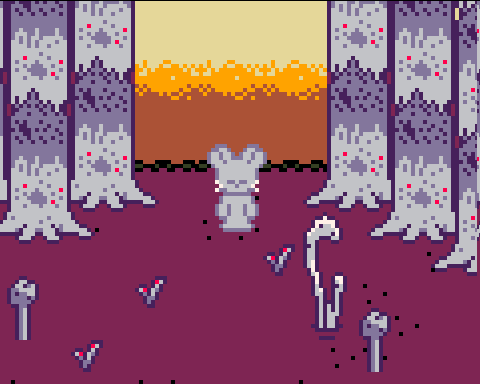
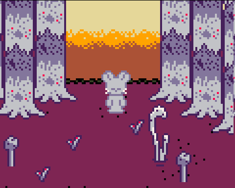

project hopping
october 3, 2024
hi all,
ive been project hopping
this month i worked on Micah, the mouse game i posted videos for earlier this year
Micah is an exploration game about finding and using different transformative effects, inspired by Yume Nikki
heres some out-of-context screenshots
 



ive ported the project from Love2D to Godot so that I can build it out faster
Orbital Terminus is very close to finished
thank you for reading, and see you next month
- ciaran